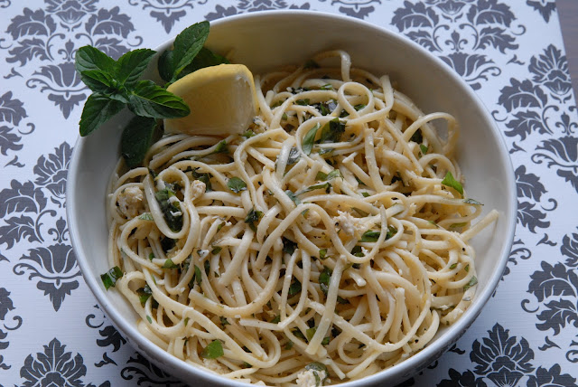

Lemon Spaghetti

Dish Description
A refreshing lemon spaghetti dish, tossed in a light, zesty sauce made with fresh lemon juice, olive oil, and Parmesan, finished with a hint of garlic and herbs.
Ingredients
- 200g spaghetti
- 2 lemons (zested and juiced)
- ¼ cup olive oil
- 2 garlic cloves (minced)
- ½ cup grated Parmesan cheese
- ¼ cup pasta water (reserved)
- ¼ teaspoon red chili flakes (optional)
- Salt (to taste)
- Black pepper (to taste)
- ¼ cup fresh parsley or basil (chopped)
Steps
- Cook the Pasta: Boil a large pot of salted water and cook the spaghetti until al dente. Reserve about ½ cup of pasta water, then drain.
- Prepare the Sauce: In a large pan, heat olive oil over medium-low heat. Add the minced garlic and sauté for about 1 minute until fragrant (avoid browning).
- Add Lemon & Pasta Water: Stir in the lemon juice, zest, and reserved pasta water. Let it simmer for about 1 minute to blend the flavors.
- Toss the Pasta: Add the cooked spaghetti to the pan and toss well to coat it in the sauce. If needed, add more pasta water for a silkier texture.
- Season & Garnish: Stir in Parmesan cheese, salt, and black pepper. Mix until the cheese melts into the sauce. Remove from heat and top with fresh parsley or basil.
- Serve: Plate the pasta and garnish with extra Parmesan and red chili flakes if desired.
More Recipes
Vist the home page for more dishes!